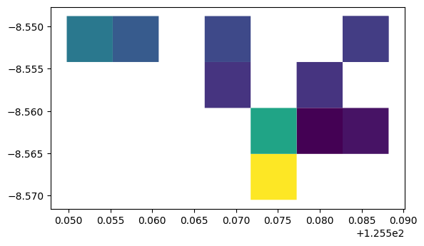
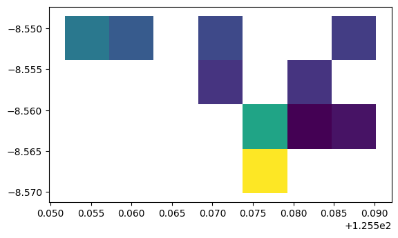
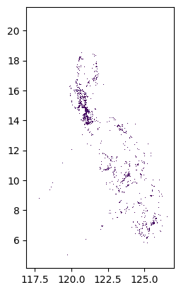

%reload_ext autoreload
%autoreload 2Explore Ookla Data
import pandas as pd
import geopandas as gpd
import fastcore.all as Lfrom pathlib import Pathdata_dir = Path('../test_data/inputs/tl/ookla_tl')ookla_gdf = gpd.read_file(data_dir/'tl_2019_2_ookla.geojson')ookla_gdf.head()| quadkey | avg_d_kbps | avg_u_kbps | avg_lat_ms | tests | devices | index_right | ADM0_EN | ADM0_PCODE | ADM1_EN | ... | ADM2_EN | ADM2_PCODE | ADM3_EN | ADM3_PCODE | ADM3_REF | ADM3ALT1EN | ADM3ALT2EN | POINT_X | POINT_Y | geometry | |
|---|---|---|---|---|---|---|---|---|---|---|---|---|---|---|---|---|---|---|---|---|---|
| 0 | 3101122101023021 | 4704 | 5886 | 21 | 24 | 9 | 198 | Timor-Leste | TL | Dili | ... | Dom Aleixo | TL0605 | Kampung Alor | TL060502 | None | None | None | 125.561498 | -8.550816 | POLYGON ((125.55527 -8.54877, 125.56077 -8.548... |
| 1 | 3101122101023123 | 2688 | 4930 | 50 | 67 | 14 | 167 | Timor-Leste | TL | Dili | ... | Nain Feto | TL0602 | Gricenfor | TL060206 | None | None | None | 125.582836 | -8.554380 | POLYGON ((125.57725 -8.55420, 125.58274 -8.554... |
| 2 | 3101122101023310 | 1104 | 901 | 44 | 86 | 2 | 63 | Timor-Leste | TL | Dili | ... | Nain Feto | TL0602 | Bemori | TL060203 | None | None | None | 125.587389 | -8.561463 | POLYGON ((125.58274 -8.55963, 125.58823 -8.559... |
| 3 | 3101122101023020 | 6505 | 8518 | 30 | 64 | 4 | 146 | Timor-Leste | TL | Dili | ... | Dom Aleixo | TL0605 | Fatuhada | TL060501 | None | None | None | 125.553714 | -8.550279 | POLYGON ((125.54978 -8.54876, 125.55527 -8.548... |
| 4 | 3101122101023033 | 2683 | 5667 | 34 | 18 | 14 | 101 | Timor-Leste | TL | Dili | ... | Vera Cruz | TL0601 | Colmera | TL060105 | None | None | None | 125.572220 | -8.555532 | POLYGON ((125.56626 -8.55420, 125.57175 -8.554... |
5 rows × 21 columns
ookla_gdf.columns.valuesarray(['quadkey', 'avg_d_kbps', 'avg_u_kbps', 'avg_lat_ms', 'tests',
'devices', 'index_right', 'ADM0_EN', 'ADM0_PCODE', 'ADM1_EN',
'ADM1_PCODE', 'ADM2_EN', 'ADM2_PCODE', 'ADM3_EN', 'ADM3_PCODE',
'ADM3_REF', 'ADM3ALT1EN', 'ADM3ALT2EN', 'POINT_X', 'POINT_Y',
'geometry'], dtype=object)import matplotlib.pyplot as pltookla_gdf.crs<Geographic 2D CRS: EPSG:4683>
Name: PRS92
Axis Info [ellipsoidal]:
- Lat[north]: Geodetic latitude (degree)
- Lon[east]: Geodetic longitude (degree)
Area of Use:
- name: Philippines - onshore and offshore.
- bounds: (116.04, 3.0, 129.95, 22.18)
Datum: Philippine Reference System 1992
- Ellipsoid: Clarke 1866
- Prime Meridian: Greenwichookla_gdf.crs.is_geographicTrueax = plt.axes()
ookla_gdf.plot(column='avg_d_kbps', ax=ax)<AxesSubplot: >
ookla_gdf = ookla_gdf.to_crs("EPSG:4326")ax = plt.axes()
ookla_gdf.plot(column='avg_d_kbps', ax=ax)<AxesSubplot: >
len(ookla_gdf)11ookla_gdf.geometry.total_boundsarray([125.5517578 , -8.57015774, 125.59020995, -8.5484298 ])data_dir2 = Path('../data/SVII_PH_KH_MM_TL/ph/ookla_ph')%%time
ookla_gdf2 = gpd.read_file(data_dir2/'ph_2020_2_ookla.geojson')CPU times: user 9.25 s, sys: 254 ms, total: 9.51 s
Wall time: 9.5 sookla_gdf2.total_boundsarray([117.38740654, 4.92216319, 126.58843999, 20.78878856])len(ookla_gdf2)84950ax = plt.axes()
ookla_gdf2.plot(column='avg_d_kbps', ax=ax)<AxesSubplot: >
Check lat/long column names for DHS clusters
repo_dir = '../data/outputs'dhs_countries = ['kh','mm','ph','tl']dhs_geo_zip_folders = dict(
kh='KHGE71FL',
mm='MMGE71FL',
ph='PHGE71FL',
tl='TLGE71FL')def get_cluster_coords(country, repo_dir=repo_dir,dhs_geo_zip_folders=dhs_geo_zip_folders):
folder = dhs_geo_zip_folders.get(country,None)
if folder is None:
raise ValueError(f"No DHS geo_zip_folder found for {country}, only these countries have a DHS geo_zip_folder {dhs_geo_zip_folders.keys()}")
cluster_coord_path = Path(repo_dir)/f'dhs_{country}'/f'{folder}_cluster_coords.csv'
if not cluster_coord_path.exists():
raise ValueError(f"Cluster coords file {cluster_coord_path} is missing!")
return pd.read_csv(cluster_coord_path)
kh_cluster_coords = get_cluster_coords('kh')
mm_cluster_coords = get_cluster_coords('mm')
ph_cluster_coords = get_cluster_coords('ph')
tl_cluster_coords = get_cluster_coords('tl')kh_cluster_coords.columns.valuesarray(['DHSID', 'DHSCC', 'DHSYEAR', 'DHSCLUST', 'CCFIPS', 'ADM1FIPS',
'ADM1FIPSNA', 'ADM1SALBNA', 'ADM1SALBCO', 'ADM1DHS', 'ADM1NAME',
'DHSREGCO', 'DHSREGNA', 'SOURCE', 'URBAN_RURA', 'LATNUM',
'LONGNUM', 'ALT_GPS', 'ALT_DEM', 'DATUM', 'geometry'], dtype=object)mm_cluster_coords.columns.valuesarray(['DHSID', 'DHSCC', 'DHSYEAR', 'DHSCLUST', 'CCFIPS', 'ADM1FIPS',
'ADM1FIPSNA', 'ADM1SALBNA', 'ADM1SALBCO', 'ADM1DHS', 'ADM1NAME',
'DHSREGCO', 'DHSREGNA', 'SOURCE', 'URBAN_RURA', 'LATNUM',
'LONGNUM', 'ALT_GPS', 'ALT_DEM', 'DATUM', 'geometry'], dtype=object)kh_cluster_coords.columns.valuesarray(['DHSID', 'DHSCC', 'DHSYEAR', 'DHSCLUST', 'CCFIPS', 'ADM1FIPS',
'ADM1FIPSNA', 'ADM1SALBNA', 'ADM1SALBCO', 'ADM1DHS', 'ADM1NAME',
'DHSREGCO', 'DHSREGNA', 'SOURCE', 'URBAN_RURA', 'LATNUM',
'LONGNUM', 'ALT_GPS', 'ALT_DEM', 'DATUM', 'geometry'], dtype=object)ph_cluster_coords.columns.valuesarray(['DHSID', 'DHSCC', 'DHSYEAR', 'DHSCLUST', 'CCFIPS', 'ADM1FIPS',
'ADM1FIPSNA', 'ADM1SALBNA', 'ADM1SALBCO', 'ADM1DHS', 'ADM1NAME',
'DHSREGCO', 'DHSREGNA', 'SOURCE', 'URBAN_RURA', 'LATNUM',
'LONGNUM', 'ALT_GPS', 'ALT_DEM', 'DATUM', 'geometry'], dtype=object)tl_cluster_coords.columns.valuesarray(['DHSID', 'DHSCC', 'DHSYEAR', 'DHSCLUST', 'CCFIPS', 'ADM1FIPS',
'ADM1FIPSNA', 'ADM1SALBNA', 'ADM1SALBCO', 'ADM1DHS', 'ADM1NAME',
'DHSREGCO', 'DHSREGNA', 'SOURCE', 'URBAN_RURA', 'LATNUM',
'LONGNUM', 'ALT_GPS', 'ALT_DEM', 'DATUM', 'F21', 'F22', 'F23',
'geometry'], dtype=object)